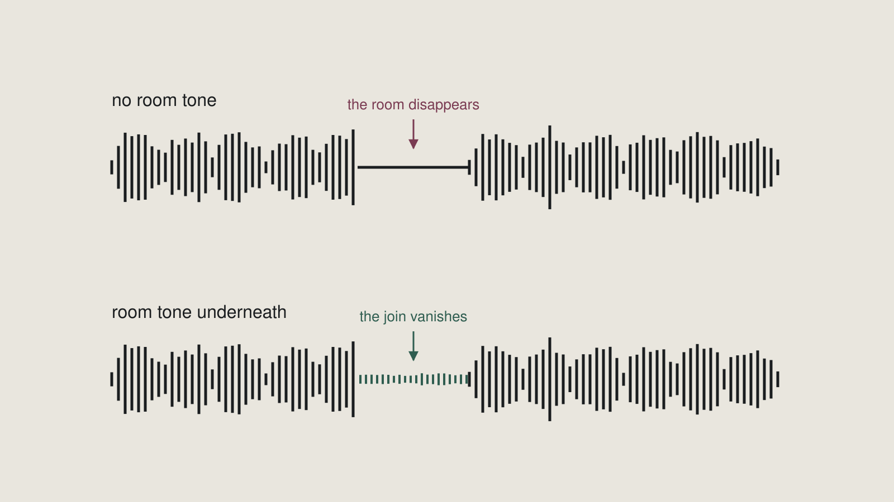

Week 6 slides · Editing and sound design
What was on screen in class. Arrow keys or click to move.
1 / 15
Title
Week 6 — Editing and sound design
Last week you captured. This week you decide.
2 / 15
Last week's open question
What is room tone for?
3 / 15
The join, unfilled
Shown in class.
4 / 15
The join, filled
That.

5 / 15
Outcomes
By the end of this week you can
- Edit recorded speech for clarity without making it sound processed
- Make a structural cut that changes how the piece lands, and say why
- Balance music under speech at levels that serve both
- Demonstrate the improvement over your source by comparison
6 / 15
What is wrong with this?
Shown in class.
7 / 15
The breaths are gone.
People breathe. Take out all the breathing and you have made a machine.
8 / 15
Clarity is not meaning
Cutting for clarity ≠ cutting for meaning
Clarity removes what is in the way.
Meaning changes what the piece is about.
9 / 15
Two orders
Shown in class.
10 / 15
And what did it cost?
What did it cost?
11 / 15
Hear the swirl
Shown in class.
12 / 15
The fix was last week.
At the microphone.
Noise reduction is last, and least.
13 / 15
Music
Loud enough to be felt.
Quiet enough that no word is lost.
There is no number. Listen — on headphones, then check it on speakers.
14 / 15
Submit both
You submit the edit AND the raw.
So "better" is checkable, not asserted.
Module summative · 10% of your course grade
15 / 15
This is week 13's dry run.
The final project's audio piece requires exactly this pairing.
Nobody should meet it for the first time in the final project.